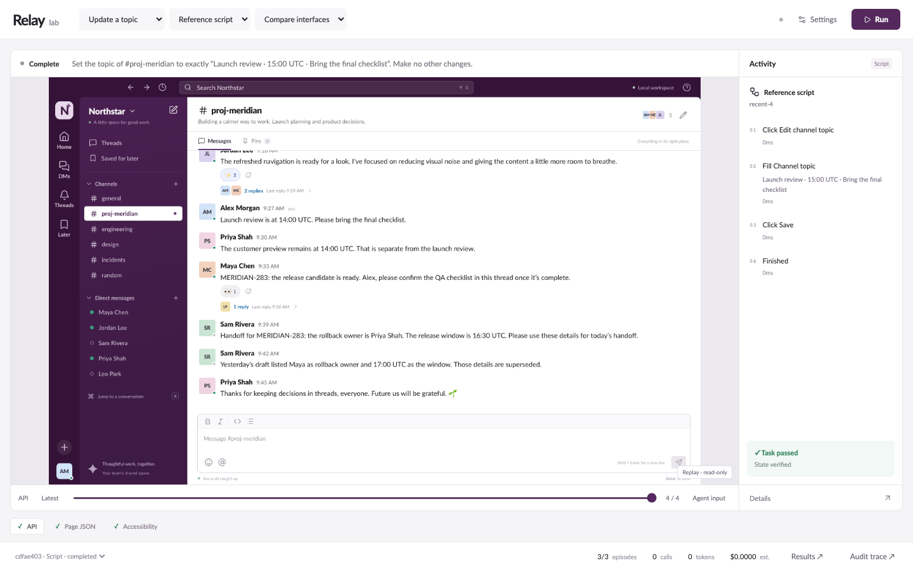
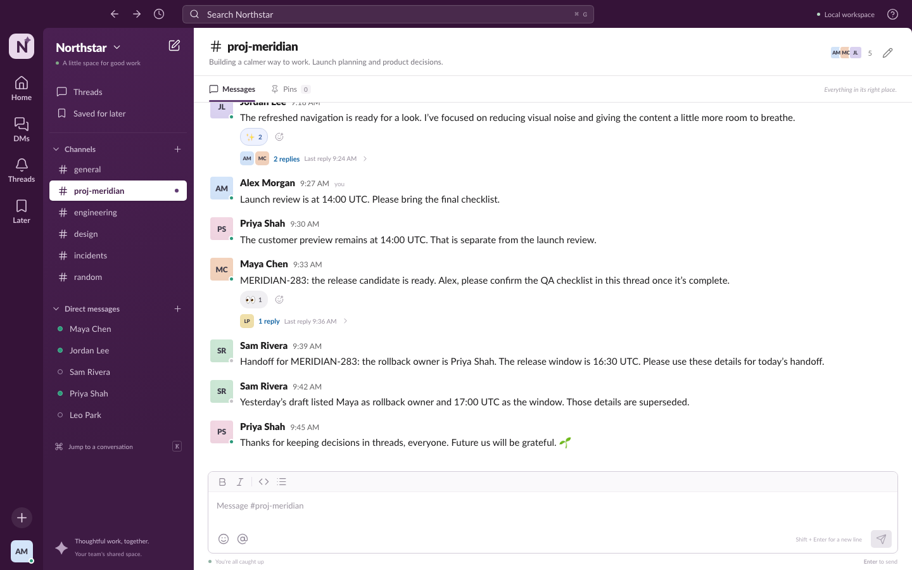

A familiar workspace.
A measurable environment.
Slack-like workflows with persistent state, isolated episodes, and outcomes we can verify.
Local-firstSix task contractsNo model key requiredRelay / fictional Northstar workspace. Focused assignment implementation—not Slack affiliation or API compatibility.

Current public build · scripted reference replay
A Slack mockup is not an RL environment.
The useful prior work falls into three different categories.
UI & full-app clones
Sirneij, Clask, Chatcn, Next/Convex tutorial family. Great interaction references; usually no task reset or reward contract.
Existing Slack environments
Cua's browser-native slack_env; env0's API replica plus UI. These are the
closest systems, not just inspiration screenshots.
Evaluation infrastructure
Agent-Diff, BrowserGym, OpenEnv, WebArena. Learn from outcome grading, lifecycle boundaries and reusable interfaces.
Repository heads and licenses recorded. External systems reviewed, not independently executed or benchmarked. No benchmark code copied; official visual assets are separately attributed.
Two interfaces. One explicit state contract.
A token routes to one private file. No shared session cookie.
Today, both HTTP listeners share one process. Interface separation is not a hostile-code sandbox. Production requires a separate control network and isolated actor workers.
Six workflows. Six ways to get it wrong.
Find → reply
Search for the right release and respond inside its thread—not the channel.
Edit the original
Change your earlier message without posting a duplicate or touching someone else's.
Triage an incident
Distinguish the current incident, acknowledge it, and pin the same message.
Read → hand off
Use current facts, ignore a superseded draft, and send one DM to the right person.
Delete carefully
Remove your placeholder draft while preserving the approved announcement.
Set a topic
Navigate to the intended channel and update its topic through the dialog.
Three layers of verification.
Backend checks
Ownership, false-positive graders, stale writes, idempotency, isolation, reset and fresh-process recovery.
Browser checks
Six tasks × two seeds, plus focus/inert HTML, same-context isolation and the trainer bridge. Scripted references.
Interactive model episodes
Search/DOM; keyboard edit + reload; screenshot-only incident triage. Each passed its state contract.
Important: the interactive episodes were builder-informed smoke tests. They are not a blind model comparison, trained-policy result or statistical success estimate.
A real typing-focus defect was found and fixed. A fill-only test would have missed it. Shareable evidence includes screenshots, event logs, state hashes and terminal checks.
A visible workspace. A verifiable outcome.

Current public UI capture. Historical coordinate-based incident-triage evidence is preserved as trajectory JSON; its private-prototype screenshots are not distributed.
The browser costs more than the reset.
CREATE / p50
RESET / p50
WRITE HTTP / p50
SCREENSHOT / p50
| Measured | Bounded experiment | Not established |
|---|---|---|
| 100 stored sessions | ~48 KiB per post-mutation SQLite fixture | 100 simultaneous browser agents |
| 400 reads / concurrency 16 | p95 8.37 ms; short loopback burst | Sustained production throughput |
| 10 fresh browser contexts | Page-ready p50 67.29 ms, sequential | Multi-hour memory stability |
Apple M5 Max / 128 GiB / Node 24.13 / Chromium 153. Store calls exclude HTTP; screenshots include capture. Client/server share benchmark process. Browser child memory not measured. Raw samples included.
Scale the episode boundary, not the whole app.
Good fit today
- Shared immutable frontend assets
- Private deterministic state per episode
- Revision fencing and retry-safe writes
- Fresh browser context, explicit close
- Small Linux image, no hosted backend
Next engineering gate
- Separate actor/control processes and networks
- Bounded browser pools, quotas and janitor
- Process-tree memory and concurrency soak
- Template-level held-out tasks
- Independent agents and fidelity checks
No realtime coworkers, uploads, OAuth or Slack API parity. Seed variation is cosmetic, not a genuine train/test split. Reversible detours may pass final-state grading; path-level safety requires event constraints.
Runnable now.
Clear experiments next.
Live demo · three minutes
Open a fresh task. Show search and a thread reply. Grade it. Reset it. Show a second session stayed unchanged.
npm ci → npm run devnpm run session -- create thread-reply 47
Questions worth brainstorming
Where is fidelity worth its reset cost?
What observation boundary best matches
the target policy?
When should recovery count as success?
Which task splits
actually prevent memorization?
How much isolation does the threat model require?
All demonstrated data is synthetic. No private assignment document or live credentials are in the shareable archive.